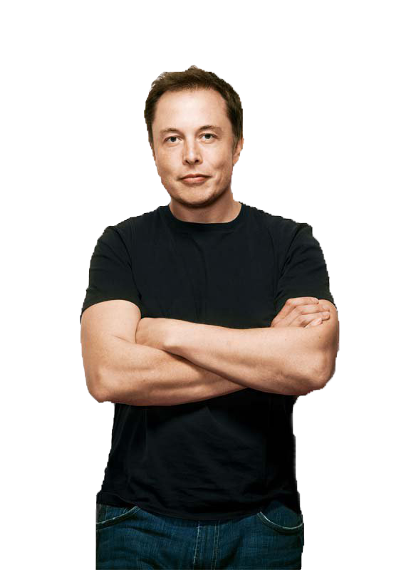
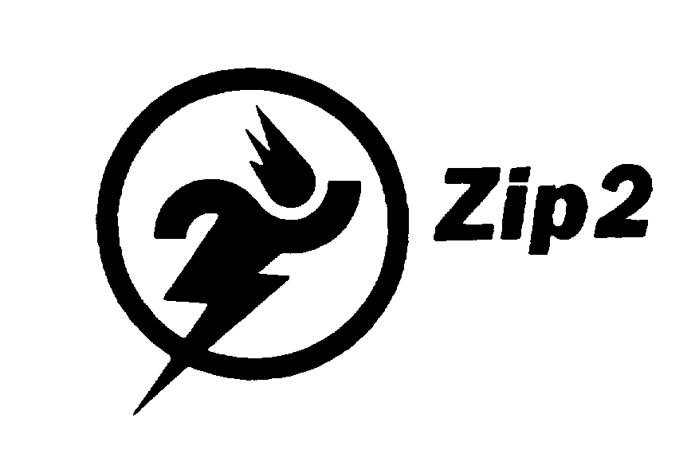
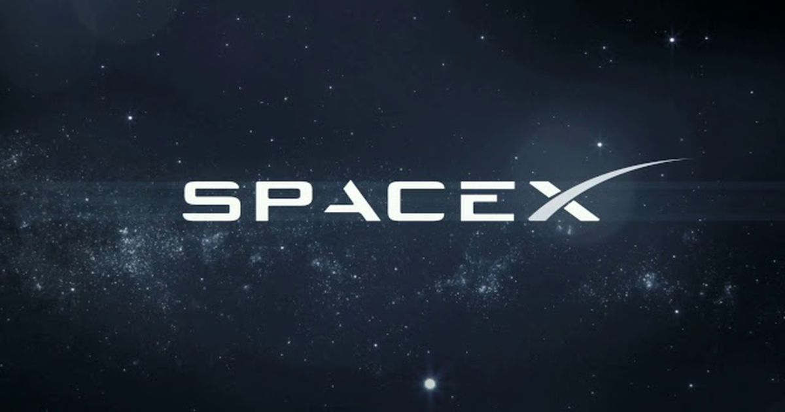

Biography Ilon
Childhood and family
Elon Reeve Musk was born on June 28, 1971, in Pretoria, South Africa. His
mother is Maye Musk
(née Haldeman), a model and dietitian born in Saskatchewan, Canada, but raised in
South Africa. His father
is Errol Musk, a White South African electromechanical engineer, pilot, sailor, consultant, and
property developer
who was once a half-owner of a Zambian emerald mine near Lake Tanganyika. Musk has a
younger brother, Kimbal
(born 1972), and a younger sister, Tosca (born 1974). His maternal grandfather, Joshua
Haldeman, was an
adventurous American-born Canadian who took his family on record-breaking journeys in a
single-engine Bellanca
airplane to Africa and Australia; Musk has British and Pennsylvania Dutch
ancestry.
Education
Aware that it would be easier to enter the United States from Canada, Musk applied for a Canadian passport by jus sanguinis, through his Canadian-born mother. While awaiting the documentation, he attended the University of Pretoria for five months; this allowed him to avoid mandatory service in the South African military. Musk arrived in Canada in June 1989, and lived with a second cousin in Saskatchewan for a year, working odd jobs at a farm and lumber-mill. In 1990, he entered Queen's University in Kingston, Ontario. Two years later, he transferred to the University of Pennsylvania, where he graduated in 1997 with a Bachelor of Arts degree in physics and a Bachelor of Science degree in economics from the Wharton School. In 1994, Musk held two internships in Silicon Valley during the summer: at energy storage startup Pinnacle Research Institute, which researched electrolytic ultracapacitors for energy storage, and at the Palo Alto-based startup Rocket Science Games. In 1995, he was accepted to a Doctor of Philosophy (Ph.D.) program in materials science at Stanford University in California. Musk attempted to get a job at Netscape but never received a response to his inquiries. He dropped out of Stanford after two days, deciding instead to join the Internet boom and launch an Internet startup.
Business career
In 1995, Musk, his
brother Kimbal, and
Greg Kouri founded web software company Zip2 with funds borrowed from Musk's father. They
housed the venture
at a small rented office in Palo Alto. The company developed and marketed an Internet city guide
for the
newspaper publishing industry, with maps, directions, and yellow pages. Musk says that before
the company became
successful, he could not afford an apartment and instead rented an office and slept on the couch
and
showered at the
YMCA, and shared one computer with his brother.
According to Musk, "The website was up during the day and I was coding it at
night,
seven days a
week, all the time." The Musk brothers obtained contracts with The New York Times and the
Chicago Tribune,
and persuaded the board of directors to abandon plans for a merger with CitySearch. Musk's
attempts to become
CEO, a position held by its Chairman Rich Sorkin, were thwarted by the board. Compaq
acquired Zip2 for $307
million in cash in February 1999, and Musk received $22 million for his 7-percent
share.
X.com and PayPal
 In 1999, Musk
co-founded X.com, an
online financial services and e-mail payment company. The startup was one of the first federally
insured online
banks, and, in its initial months of operation, over 200,000 customers joined the service. The
company's
investors regarded Musk as inexperienced and had him replaced with Intuit CEO Bill Harris by the
end
of the
year. The following year, X.com merged with online bank Confinity to avoid
competition. Founded by
Max Levchin and Peter Thiel, Confinity had its own money-transfer service, PayPal, which was
more popular than
X.com's service.
In 1999, Musk
co-founded X.com, an
online financial services and e-mail payment company. The startup was one of the first federally
insured online
banks, and, in its initial months of operation, over 200,000 customers joined the service. The
company's
investors regarded Musk as inexperienced and had him replaced with Intuit CEO Bill Harris by the
end
of the
year. The following year, X.com merged with online bank Confinity to avoid
competition. Founded by
Max Levchin and Peter Thiel, Confinity had its own money-transfer service, PayPal, which was
more popular than
X.com's service.
Within the merged company, Musk returned as CEO. Musk's preference for Microsoft
software over Unix
created a rift in the company and caused Thiel to resign. Due to resulting technological issues
and lack of a
cohesive business model, the board ousted Musk and replaced him with Thiel in September 2000.
Under Thiel,
the company focused on the PayPal service and was renamed PayPal in 2001. In 2002 PayPal was
acquired by
eBay for $1.5 billion in stock, of which Musk—the largest shareholder with 11.72% of
shares—received
$175.8
million. In 2017 Musk purchased the domain X.com from PayPal for an undisclosed amount,
explaining it has
sentimental value.
SpaceX
In 2001 Musk became
involved with the
nonprofit Mars Society. He was inspired by plans to place a growth-chamber for plants on Mars
and
discussed funding
the project himself. In October 2001, Musk traveled to Moscow with Jim Cantrell and Mike Griffin
to buy
refurbished Intercontinental ballistic missiles (ICBMs) that could send the greenhouse payloads
into
space. He met
with companies NPO Lavochkin and Kosmotras; however, Musk was seen as a novice and was even spat
on
by one of the
Russian chief designers.
The group returned to the United States empty-handed. In February 2002, the
group
returned to Russia
to look for three ICBMs. They had another meeting with Kosmotras and were offered one rocket for
$8
million, which
Musk rejected. Musk instead decided to start a company that could build affordable rockets. With
$100 million of
his early fortune, Musk founded Space Exploration Technologies Corp., traded as SpaceX, in May
2002. As of
2021, he remains the company's CEO and also holds the title of Chief Engineer.